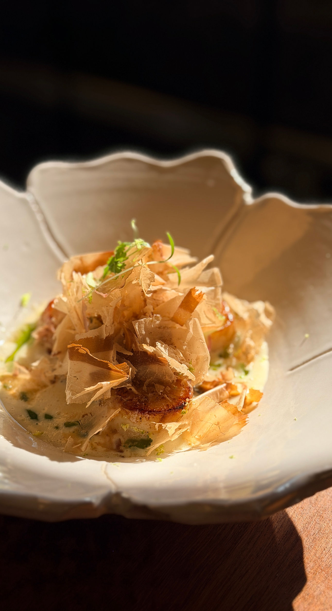
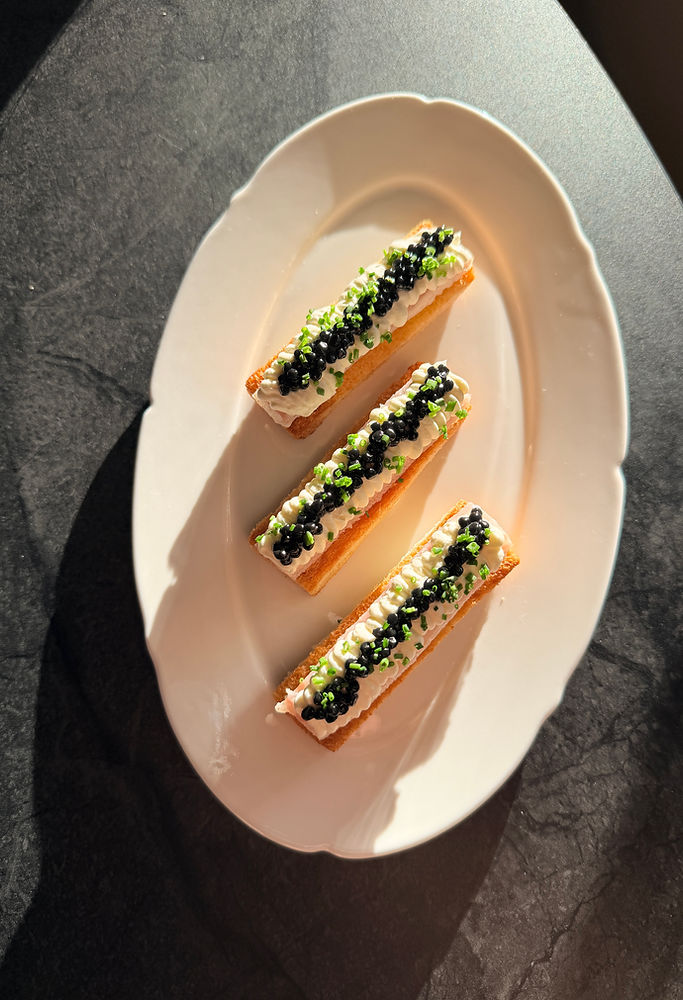

Kerstlunch
Eerste en tweede kerstdag
4 gangen verrassingsmenu €95,- p.p.
Ontvangst is tussen 12:00 en 13:30. Om 16:30 nemen wij afscheid van onze lunchgasten ter voorbereiding op het diner.
Dorpsstraat 9, Riethoven
Brabantse gemoedelijkheid en de liefde voor smaakvolle klassiekers. Aan tafel bij Cas en Kelly Pikaar, in het dorp waar Cas geboren en getogen is.

In het hart van Riethoven, het dorp waar Cas geboren en getogen is, komen Brabantse gemoedelijkheid en de liefde voor smaakvolle klassiekers samen.
Pikaar Riethoven staat voor laagdrempelig bourgondisch genot. We serveren à la carte en een 3-gangen keuzemenu, van oesters en het ‘eitje’ van Cas tot ribeye van de grill en crêpe Suzette.
Tot ziens bourgondiërs!
Cas & Kelly Pikaar

Wij serveren à la carte en een 3-gangen keuzemenu. Voor groepen groter dan twaalf personen serveren wij een verrassingsmenu.
Te bestellen tot en met 10 jaar.
Wij gebruiken de mooiste producten die in het winterseizoen voorhanden zijn.
Eerste en tweede kerstdag
4 gangen verrassingsmenu €95,- p.p.
Ontvangst is tussen 12:00 en 13:30. Om 16:30 nemen wij afscheid van onze lunchgasten ter voorbereiding op het diner.
Kerstavond, eerste en tweede kerstdag
5 gangen verrassingsmenu €105,- p.p.
Ontvangst is tussen 18:30 en 20:00.
Wij verzorgen ook grote groepen, evenementen, feestjes en partijen. In ons grotere restaurantgedeelte hebben wij verschillende mogelijkheden.
Benieuwd naar de mogelijkheden? Stuur een mail naar feest@restaurantpikaar.nl of neem een kijkje in onze brochure. Dan komen wij daar zo snel mogelijk bij je op terug.

Voor groepen vanaf 12 personen in het restaurant (max. 35 personen) hanteren wij de volgende vanaf-prijzen. Het verrassingsmenu wordt volledig uit handen gegeven aan de chef; allergieën en dieetwensen graag vooraf aangeven.
Menu’s zijn inclusief tafelbrood. Iets lekkers gezien op de à la carte kaart en wil je dit graag in het menu? Vraag even naar de mogelijkheden. Voor groepen groter dan 35 personen maken wij een offerte op maat.
Een zakelijke meeting, besloten vergadering of zakelijk diner. Onze restaurantruimte biedt de mogelijkheid om u te voorzien. Voor groepen vanaf 35 personen.
Elke bruiloft is uniek, daarom maken wij graag een aanvraag op maat. Mail ons voor de verschillende mogelijkheden.
Babyshowers en babyborrels, gender reveals, 21 diners, verjaardagen en meer. Inclusief tafelversiering en decoratie. Informeer naar onze mogelijkheden.
Om zo snel mogelijk antwoord te krijgen op je vraag, hebben wij alles op een rijtje gezet.
Wij beschikken over een apart restaurantgedeelte, dat zich perfect leent voor onder andere feesten, besloten diners, borrels en vergaderingen. Of het nu gaat om een intiem samenzijn of een zakelijke bijeenkomst, wij zorgen voor de juiste invulling. Informeer gerust naar de mogelijkheden.
Er is privé parkeergelegenheid voor de deur.
Er wordt rekening gehouden met allergieën en dieetwensen. Deze dienen wel vooraf tijdens het reserveren vermeld te worden. Niet vooraf vermelde restricties kunnen een meerprijs met zich meebrengen. Bij extreme allergieën kunt u contact opnemen met een van onze medewerkers.
Lukt reserveren met onze online tool niet? Schroom niet om ons te contacteren via info@restaurantpikaar.nl. Even binnenlopen mag uiteraard ook!
Geweldig nieuws, gefeliciteerd! Bij de reservering kunt u dit aangeven, de keukenbrigade zal hier dan alle zorg voor dragen.
Cadeaubonnen verkopen wij in het restaurant. Deze schrijven wij uit met een bedrag naar keuze. Loop gerust even binnen.
Een vegan menu koken wij niet.
Overnachten kan bij het prachtige boutique hotel Lytel Blue. Dit is op loopafstand van het restaurant.
“Jong, gedreven en gemotiveerd”
Ben jij op zoek naar een nieuwe uitdaging en lijkt het je leuk om bij een jong, gedreven en gezellig team te werken? Neem dan contact met ons op via het formulier.
Reserveer een tafel via WhatsApp of de mail. Allergieën, dieetwensen of iets te vieren? Zet het er gerust bij. Even binnenlopen mag uiteraard ook.
Op feestdagen gelden andere openingstijden; houd onze socials in de gaten.
WhatsApp +31 6 34 99 14 97
info@restaurantpikaar.nl
feest@restaurantpikaar.nl (groepen en feesten)
Privé parkeergelegenheid voor de deur.
Plan je route